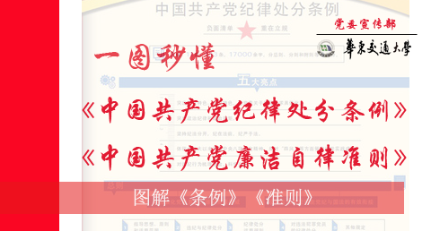
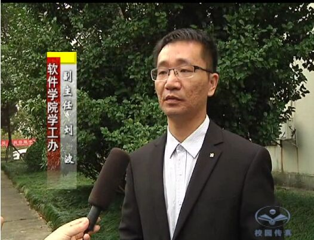

交大首页
校纪委首页
省纪委首页

中央纪委就颁布新修订的《中国共产党廉洁自律准则》《中国共产党纪律处分条例》答记者问
中央纪委监察部网站专门围绕网友们关心的《中国共产党廉洁自律准则》《中国共产党纪律处分条例》相关问题进行详细的解读。
更多
>>
更多
>>
"廉洁自律准则"8句话 总书记都曾强调过
《准则》可成为经典《条例》相当于党内“刑法”
廉洁自律准则的传统文化解读
以《准则》《条例》为基本遵循履行治党责任
抓党建：严字当头 突出重点
更多
>>
人民日报评论员：全面从严治党的治本之策
南方日报评论员：以高度的政治自觉为人民掌好权
人民日报评论员：坚持依规治党与以德治党相结合
"80后官员易腐败"？评论：別随意贴标签
从战略高度领会贯彻《准则》《条例》
更多
>>
校纪委召开《准则》《条例》专题学习会
校党委号召师生向刘波、邢戎学习
【文件】关于学习贯彻《准则》《条例》的通知
更多
>>
外语学院王显涛—以身作则
轨道学院肖乾—实践中学习
信息学院展爱云—以"心"育人
土建学院张鹏飞—学生上讲台
更多
>>
中国共产党廉洁自律准则
中国共产党纪律处分条例
孔府家风故事三则
许大勇：忠诚谱写清白人生
张文吉：敢于担当铸忠诚
陈 军：有限的生命 无尽的忠诚

<
>